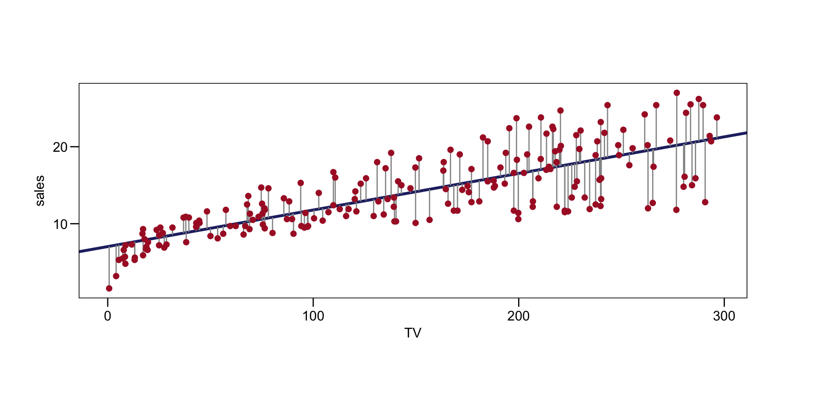
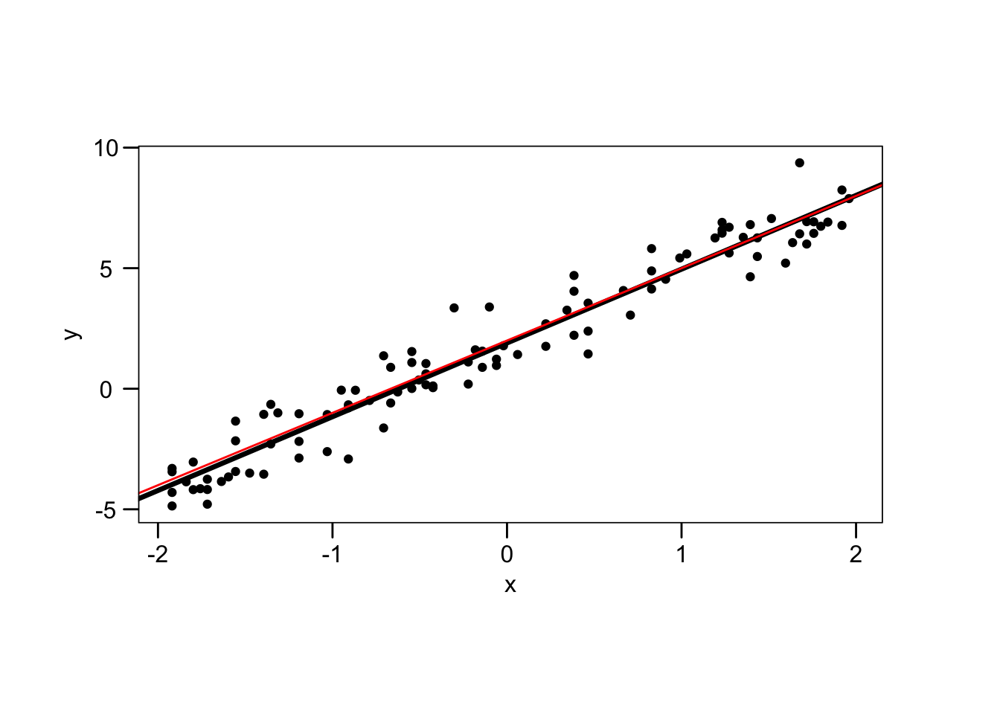
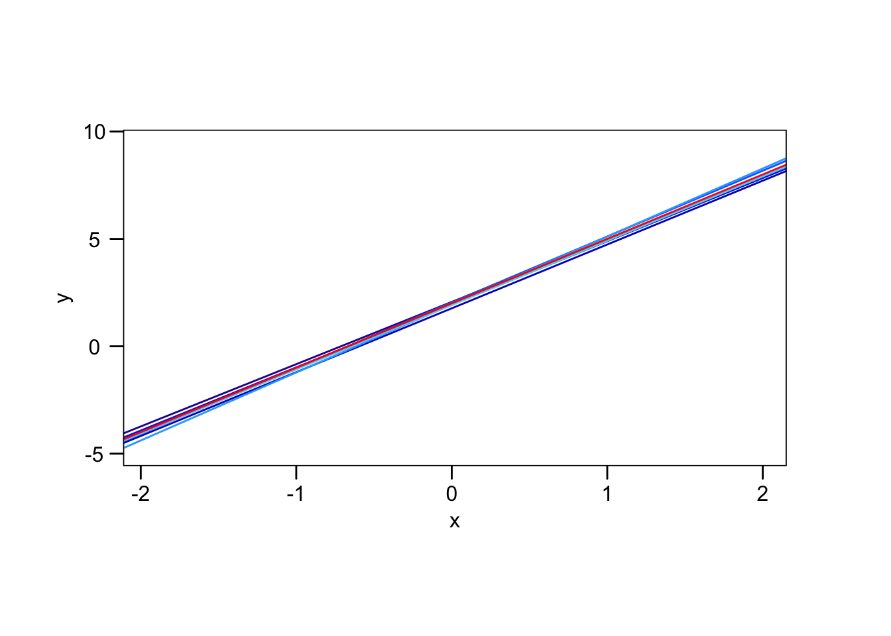
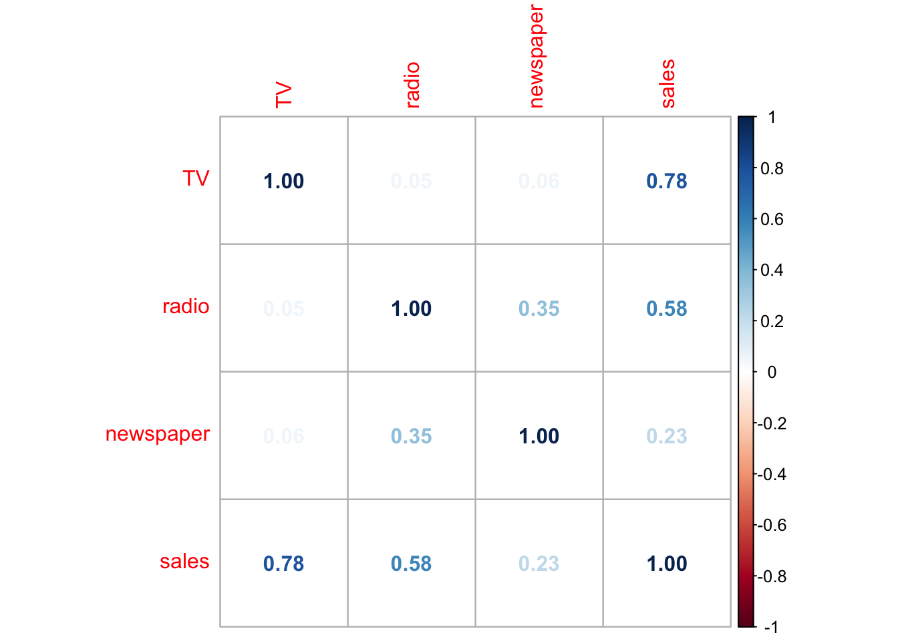
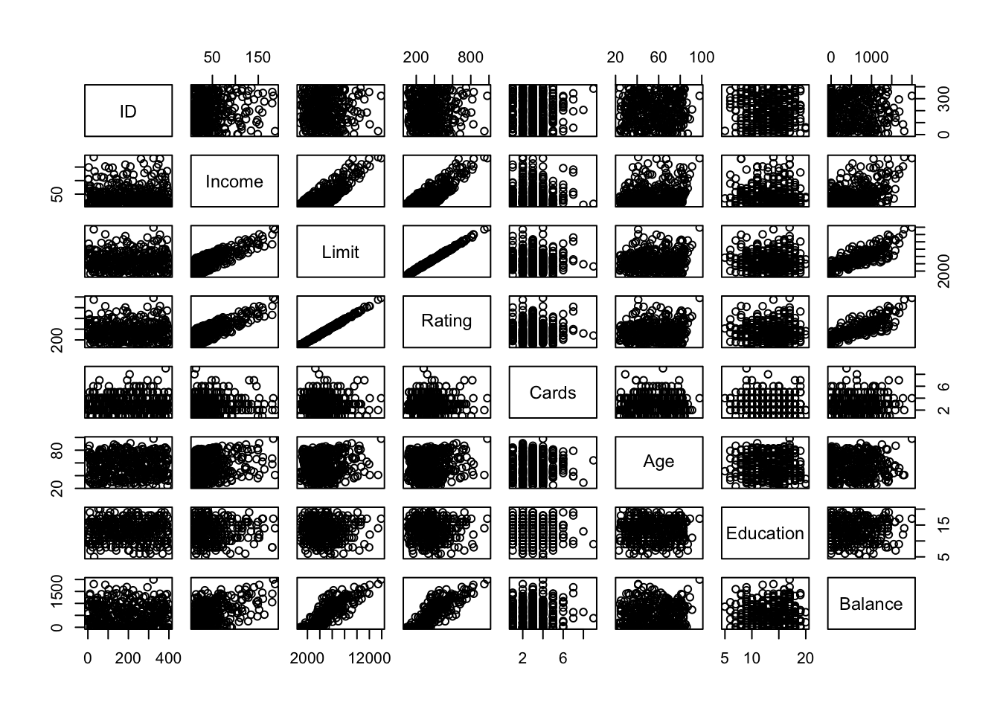

We are asked to suggest a marketing plan for next year which will yeild high product sales. We may want to inquire the following questions:
Is there a relationship between advertising budget and sales?
First we should determine if there is an association between adveritisng expenditure and sales. If not, no money shpuld be spent on advertising.
How strong is the relationship between advertising budget and sales?
If there is a relationship between advertising and sales, what is the strength of this relationship? Given a certain advertising budget, can we predict sales with a high level of accuracy? => strong relationsihp.
Which media contribute to sales?
Do all variables–tv,radio,newspaper– contribute to sales, or just one or the two?
How accurately can we estimate the effect of each medium on sales?
For every ollar spent on advertising in a particular medium, by what amount will sales increase? How accuretly can we predict this amount of increase?
How accurately can we predict future sales?
For any given level of media advertisig, what is our prediction for sales, and what is the accuracy of this prediciton?
Is the relationship linear?
If so linear regresion is appropriate tool, if not we may need to transform the predictor or the repsonse so that liner regression can be used.
Is there synergy among the advertising media?
Does the effect of a medium on sales depend on other medium levels? Does dividing advertisement budget to two or three medium yeild a higher sales?
We can answer each of these questions using Linear regression.
2.1 Simple Linear Regression
Predicting a quantitative response \(Y\) on the basis of a single predictor variable \(X\).
Our assumption is that there is approximately a linear relationship between \(X\) and \(Y\); we can write this linear relationship as
\[
Y = \beta_0 + \beta_1 X_1 + \epsilon
\]
\[
Y \approx \beta_0 + \beta_1X
\] (3.1)
For example lets say \(X\) is TV, and \(Y\) is sales
\[
sales = \beta_0 + \beta_1 \times TV + \epsilon
\] or
\[
sales = \beta_0 + \beta_1 \times TV
\]
On (3.1) \(\beta_0\) and \(\beta_1\) are unknown constants that represent the intercept and slope in the linear model. Together they are known as coefficients or parameters.
We are going to use or training data to produce estimates for \(\beta_0\) => \(\hat{\beta_0}\) and \(\beta_1\) => \(\hat{\beta_1}\). Using these predicted coefficients we can predict sales;
\[
\hat{sales} = \hat{\beta_0} + \hat{\beta_1} \times TV
\]
Since, \(\beta_0\) and \(\beta_1\) are unknown, before we can use (3.1) to make predictions we must use data to estimate the coefficients. We have \(n\) observations :
\[
(x_1,y_1), (x_2,y_2), \dots, (x_n,y_n)
\]
We want our estimated coefficients to give such predictions that will fit the avaible data as well => \(y_i \approx \hat{\beta_0} + \hat{\beta_1}x_i\) for \(i = 1,\dots, n\). This coefficients will allow us to draw a regression line and we want this regression line to be close as possible to the \(n\) data points we have.
There are different ways to measure closeness. The most common approach is minimizing the least squares criterion. Alternative approaches will be considered in Chapter 6.
Our predictions come from \(\hat{y_i} = \hat{\beta_0} + \hat{\beta_1}x_i\).
Then for each data we have a residual: difference between \(y\) and \(\hat{y}\):
\[
e_i = y_i - \hat{y_i}
\]
We need to take the squares to get the distances–because of the negative residuals, and sum them to get the residual sum of squares(RSS)
advertising %>%ggplot() +aes(x=TV, y = sales) +geom_abline(intercept = beta_0_hat_adv, slope = beta_1_hat_adv, color ="#262B70", size =1.2) +geom_segment(aes(xend=TV, yend=y_hat_adv), color ="#939393") +geom_point(color ="#AA1D2E", size =2) +theme_par()

For the advertising data, the least squares fit for the regression of sales onto TV. The fit is found by minimizing the sum of squared errors. Each grey line segment represents an error, adn the fit make a comprimise by averaging their squares. In this case a linear fit captures the essence of the relationship, although it is somewhat deficient in the left of the plot
So we have
\[
\hat{y_i} = 7.032 + 0.0475x_i
\]
According to this approximation an additional $1,000 spent on TV increases sales by 47.5 units.
2.1.2 Assessing the Accuracy of the Coefficient Estimates
We assumed that true relationship is linear: \(Y = f(X) + \epsilon\). We don’t know \(f\), and \(\epsilon\) is a mean-zero random error term.
We said \(f\) is approximatly linear, so that \(f(X) = \beta_0 + \beta_1 X\); which means
\[
Y = \beta_0 + \beta_1 X + \epsilon
\] (3.5)
error term captures: * the true relationship may not be linear * other variables that affect Y * measurement error
and is independent of \(X\).
(3.5) is the population regression line: the best linar approximation to the true relationship between \(X\) and \(Y\).
\[
\hat{y} = \hat{\beta_0} + \hat{\beta_1}X
\] is the least squares line. They are different of course! But we don’t know the population regression line. If we did:
For example, lets create a data;
First we create random x values from 100 random numbers
data %>%ggplot() +aes(x=x, y=y) +geom_point() +geom_abline(intercept =1.9, slope =3.06, size =1.2) +geom_abline(intercept =2, slope =3, color ="red") +theme_par()

They are not the same! If we were to have another data from the same data generation process other estimates of parameters would result with different least squares regression lines:
data %>%ggplot() +aes(x,y) +geom_point(size =0, color ="white") +geom_abline(intercept =lm(y_r1 ~ x_r1)$coefficients[1], slope =lm(y_r1 ~ x_r1)$coefficients[2], color ="#29019F") +geom_abline(intercept =lm(y_r2 ~ x_r2)$coefficients[1], slope =lm(y_r2 ~ x_r2)$coefficients[2], color ="#0A04BF") +geom_abline(intercept =lm(y_r3 ~ x_r3)$coefficients[1], slope =lm(y_r3 ~ x_r3)$coefficients[2], color ="#0930DF") +geom_abline(intercept =lm(y_r4 ~ x_r4)$coefficients[1], slope =lm(y_r4 ~ x_r4)$coefficients[2], color ="#0E6DFF") +geom_abline(intercept =lm(y_r5 ~ x_r5)$coefficients[1], slope =lm(y_r5 ~ x_r5)$coefficients[2], color ="#2BA8FF") +geom_abline(intercept =lm(y_r6 ~ x_r6)$coefficients[1], slope =lm(y_r6 ~ x_r6)$coefficients[2], color ="#48D9FF") +geom_abline(intercept =2, slope =3, color ="red") +theme_par()

So, different data sets generated from the same true model result in slightly different least squares lines, but the unobserved population regression line does not change.
This is because we are using a sample, and estimating characteristics of the population. Usually these characteristics are different, but generally sample characteristics will provide a good estimate to the population characteristics.
Computing \(\hat{\beta_0}\) and \(\hat{\beta_1}\) from different sets of sample data provide different but similar results. And we are trying to estimate population parameters \(\beta_0\) and \(\beta_1\) with these. Some of these \(\hat{\beta_0}\) and \(\hat{\beta_1}\) will overestimate, some will underestimate \(\beta_0\), and \(\beta_1\). But if we could average all these estimated parameters and take the average, than this average should be equal to population parameters; if this is the case this estimator is called unbiased estimator. So an unbiased estimator does not systematically over- or under-estimate the true parameter.
Okay but how close \(\hat{\beta_0}\) and \(\hat{\beta_1}\) are to the true values \(\beta_0\) and \(\beta_1\). We want to compute the standard errors associated with \(\hat{\beta_0}\) and \(\hat{\beta_1}\). Standard error telss us the average amount of estimate differes from the actual value.
Notice that formula of \(\text{SE}(\hat{\beta_1})\) is smaller when \(x_i\) are more spread out; intutively we have more leverage to estimate a slope when this is the case.
In general \(\sigma^2\) is not known, but can be estimated from the data. The estimate of \(\sigma\) is known as the residual standard error, and given by the formula
\[
\text{RSE} = \sqrt{\text{RSS}/(n-2)}
\] So, when \(\sigma^2\) is estimated fro mthe data we should write \(\hat{\text{SE}}(\hat{\beta_1})\) to indicate that an estimate has been made, but usually we drop this extra hat.
Standard errors can be used to compute confidence intervals. A 95% confidence interval is defines as a range of values such that with 95% probability, the rage will contain the true unknown value of the parameter. The range is defined in terms of lower and upper limits computed from the sample of data. For linear regression, the 95% confidence interval for \(\beta_1\) approximately takes the form
So there is approximately a 95% chance that the interval \[[\hat{\beta_1} - 1.96 \cdot \text{SE}(\hat{\beta_1}), \hat{\beta_1} + 1.96 \cdot \text{SE}(\hat{\beta-1})]\] (3.10) will contain the true value of \(\beta_1\). Same is true for \(\beta_0\)
So we can calculate the confidence interval for \(\beta_0\)
cat("In the absence of any advertising, sales will on average, fall somewhere between",beta_0_hat_adv -1.96* se_beta_0_adv, "and", beta_0_hat_adv +1.96* se_beta_0_adv)
In the absence of any advertising, sales will on average, fall somewhere between 6.135221 and 7.929966
cat("For each $1,000 increase in TV advertising, average increase in sales will be between",(beta_1_hat_adv -1.96* se_beta_1_adv) *1000, "and", (beta_1_hat_adv +1.96* se_beta_1_adv)*1000, "by 95% confidence")
For each $1,000 increase in TV advertising, average increase in sales will be between 42.26305 and 52.81023 by 95% confidence
Lets confirm our results
summary(lm(sales ~ TV, advertising))
Call:
lm(formula = sales ~ TV, data = advertising)
Residuals:
Min 1Q Median 3Q Max
-8.3860 -1.9545 -0.1913 2.0671 7.2124
Coefficients:
Estimate Std. Error t value Pr(>|t|)
(Intercept) 7.032594 0.457843 15.36 <2e-16 ***
TV 0.047537 0.002691 17.67 <2e-16 ***
---
Signif. codes: 0 '***' 0.001 '**' 0.01 '*' 0.05 '.' 0.1 ' ' 1
Residual standard error: 3.259 on 198 degrees of freedom
Multiple R-squared: 0.6119, Adjusted R-squared: 0.6099
F-statistic: 312.1 on 1 and 198 DF, p-value: < 2.2e-16
confint(lm(sales ~ TV, advertising))
2.5 % 97.5 %
(Intercept) 6.12971927 7.93546783
TV 0.04223072 0.05284256
So standard errors of our estimated parameters tells us the average amount of difference from the true population parameters. And using the confidence intervals we can tell a range of the true population parameters’ interval with a percentage (usually 95%).
Lets do this for our data as well, which we know has the form
\[
y_i = 2 + 3 x_i + \epsilon_i
\] Lets calculate \(\hat{\beta_0}\) and \(\hat{\beta_1}\) first
Call:
lm(formula = y ~ x, data = data)
Residuals:
Min 1Q Median 3Q Max
-2.01398 -0.65163 -0.06344 0.60455 2.39869
Coefficients:
Estimate Std. Error t value Pr(>|t|)
(Intercept) 1.88077 0.09180 20.49 <2e-16 ***
x 3.05893 0.07608 40.20 <2e-16 ***
---
Signif. codes: 0 '***' 0.001 '**' 0.01 '*' 0.05 '.' 0.1 ' ' 1
Residual standard error: 0.9163 on 98 degrees of freedom
Multiple R-squared: 0.9428, Adjusted R-squared: 0.9423
F-statistic: 1616 on 1 and 98 DF, p-value: < 2.2e-16
So we can say that on average our \(\hat{\beta_0}\)s are 0.091 differ from \(\beta_0\), and our \(\hat{\beta_1}\)s differ 0.076 from \(\beta_1\). To make more sense of it we can calculate the confidence intervals
cat("By 95% confidence we can say that the true beta_0 is between", beta_0_hat_data -1.96* se_beta_0_data, "and", beta_0_hat_data +1.96* se_beta_0_data )
By 95% confidence we can say that the true beta_0 is between 1.700846 and 2.060698
cat("By 95% confidence we can say that the true beta_0 is between", beta_1_hat_data -1.96* se_beta_1_data, "and", beta_1_hat_data +1.96* se_beta_1_data)
By 95% confidence we can say that the true beta_0 is between 2.909799 and 3.208051
Lets confirm this
confint(lm(y~x,data))
2.5 % 97.5 %
(Intercept) 1.698600 2.062944
x 2.907938 3.209912
Since standard error tells us the range of the \(\beta\) values via confidence interval, we can infer that if this range does not include 0, than our \(\beta\) values are statistically significant; x is assocaited with y.
Or we can use standard erros to perform hypothesis tests on the coefficients. We usually don’t care about the intercept, so lets do the hypothesis test on only \(\hat{\beta_1}\).
\[
\begin{align}
H_0 &: \beta_1 = 0 \to \text{there is no relationship between X and Y} \\
H_1 &: \beta_1 \neq 0 \to \text{there is some relationship between X and Y}
\end{align}
\] If the null-hypothesis is true => $ _1 = 0$ => \(Y = \beta_0 + \epsilon\) => \(X\) is not associated with \(Y\).
To test the null-hypothessi, we need to determine whether our estimate \(\hat{\beta_1}\) is sufficiently far from zero that we can be confident that \(\beta_1\) is non-zero. How far is enough? This depends on the accuracy of \(\hat{\beta_1}\)–that is it depends on \(\text{SE}(\hat{\beta_1})\). If \(\text{SE}(\hat{\beta_1})\) is small, then even relatively small values of \(\hat{\beta_1}\) may provide strong evidence that \(\beta_1 \neq 0\). If \(\text{SE}(\hat{\beta_1})\) is large, then \(\hat{\beta_1}\) must be large in absolute value in order for us to reject the null hypothessis. In practice we compute a t-statistic given by
\[
t = \frac{\hat{\beta_1} - 0}{\text{SE}(\hat{\beta_1})}
\] (3.14)
which measures the number of standard deviations that \(\hat{\beta_1}\) is away from zero. From the t-statistic we can compute the p-value; a small p value indicates that it is unlikely to observe such a substantial association between the predictor and the response due to chance, in absence of any real association between the predictor and the response. So if p value is small we infer that there is assocaition between the predictor and the response => we reject the null hypothesis. Typical p-value cutoffs for rejecting the null hypothesis are 5 or 1%. When \(n=30\) these correspond to tstatsitcs of around 2 and 2.75.
summary(lm(sales ~ TV, advertising))
Call:
lm(formula = sales ~ TV, data = advertising)
Residuals:
Min 1Q Median 3Q Max
-8.3860 -1.9545 -0.1913 2.0671 7.2124
Coefficients:
Estimate Std. Error t value Pr(>|t|)
(Intercept) 7.032594 0.457843 15.36 <2e-16 ***
TV 0.047537 0.002691 17.67 <2e-16 ***
---
Signif. codes: 0 '***' 0.001 '**' 0.01 '*' 0.05 '.' 0.1 ' ' 1
Residual standard error: 3.259 on 198 degrees of freedom
Multiple R-squared: 0.6119, Adjusted R-squared: 0.6099
F-statistic: 312.1 on 1 and 198 DF, p-value: < 2.2e-16
Here we see that t statistics are very high, and p values are very low => reject the null hypothesis for both \(\beta\) values; they are statistically significant.
2.1.3 Assessing the Accuracy of the Model
Once we concluded the statistically significant variable–rejecting the null hypothesis, we want to quantify the extend to which the model fits the data. We can use either
Residual standard error
\(R^2\)
Residual standard error
Recall from \(Y_i = \beta_0 + \beta_1 X_i + \epsilon_i\) that associated with each observation is an error term \(\epsilon\). Because of these error terms even if we knew the true regression line, we would not be able to predict \(Y\) from \(X\). The RSE is an estimate of the standard deviation of \(\epsilon\). It is the average amount that the response will deviate from the true regression line, computed by
In the advertising data, RSE was 3.26; actual sales in each market deviate from the true regression line by approximately 3,269 units, on average. This also means that; if the model were correct and the true values of the unknown coefficients \(\beta_0\) and \(\beta_1\) were known exaclty, any predcition of sales on the basis of TV advertising would still be off by about 3,260 units on average. Is this prediction error accaptable? Depends on the data: in the advertising data set the mean value of sales is \(\approx 14,000\) units, and so the percentage error is \(3,260 / 14,000 = 23%\).
The RSE is considered a measure of the lack of fit of the model \(Y=\beta_0 + \beta_1 + \epsilon\) to the data. If the predictions from the model are very close to the true outcome values–\(\hat{y_i} \approx y_i\) then RSE will be small, and we can concldue that the model fits the data very well. Otherwise, if \(\hat{y_i}\) is very far from \(y_i\) then RSE may be quite large, indicating the model doesn’t fit the data well.
\(R^2\)Statistic
The RSE provides an absolute measure of lack of fit of the model to the data. \(R^2\) provides an alternative measure of fit. It takes the form of a proportion–the proportion of variance explained–and so its always \(0\leq R^2 \leq 1\) and is independent of the scale of \(Y\)–as opposed to RSE.
where \(\text{TSS} = \sum(y_i - \bar{y})^2\) is the total sun of squares and \(\text{RSS} = \sum(y_i - \hat{y_i})^2\). TSS measures the total variaance in the response \(Y\); and can be thought of as the amount of varaiblity ingerent in the response before the regression is performed. RSS measures the amount of varaiblity that is left unexplained after performing the regression. So TSS - RSS measures the amount of variability in the response that is explained by performing the regression, and \(R^2\) measures the proportion of variability in\(Y\)that can be explained using\(X\). As \(R^2\) gets closer to 1, a large proportion of the variability in the response has been explained by the regression. A number near 0 indicates that the regression did not explain much of the variablity in the response; this might occur because the linear model is wrong, or the inherit error \(\sigma^2 = \text{RSE}^2\) is high, or both.
Lets calculate \(R^2\) of our estimation on advertising data with the model \(\hat{sales_i} = \hat{\beta_0} + \hat{\beta_1}TV_i\)
94% of the variablity in y is explained by x; very good fit of the model.
\(R^2\) is better to interpret than RSE.
2.2 Multiple Linear Regression
In practice we have more than one predictor to explain \(Y\).
How can we extend our analysis of the advertising order to accomodate the other two (radio and newspaper) additional predictors?
=> We can run three separate simple linear regressions, each of which uses a different advertising medium as a predictor:
summary(lm(sales ~ TV, advertising))
Call:
lm(formula = sales ~ TV, data = advertising)
Residuals:
Min 1Q Median 3Q Max
-8.3860 -1.9545 -0.1913 2.0671 7.2124
Coefficients:
Estimate Std. Error t value Pr(>|t|)
(Intercept) 7.032594 0.457843 15.36 <2e-16 ***
TV 0.047537 0.002691 17.67 <2e-16 ***
---
Signif. codes: 0 '***' 0.001 '**' 0.01 '*' 0.05 '.' 0.1 ' ' 1
Residual standard error: 3.259 on 198 degrees of freedom
Multiple R-squared: 0.6119, Adjusted R-squared: 0.6099
F-statistic: 312.1 on 1 and 198 DF, p-value: < 2.2e-16
summary(lm(sales ~ radio, advertising))
Call:
lm(formula = sales ~ radio, data = advertising)
Residuals:
Min 1Q Median 3Q Max
-15.7305 -2.1324 0.7707 2.7775 8.1810
Coefficients:
Estimate Std. Error t value Pr(>|t|)
(Intercept) 9.31164 0.56290 16.542 <2e-16 ***
radio 0.20250 0.02041 9.921 <2e-16 ***
---
Signif. codes: 0 '***' 0.001 '**' 0.01 '*' 0.05 '.' 0.1 ' ' 1
Residual standard error: 4.275 on 198 degrees of freedom
Multiple R-squared: 0.332, Adjusted R-squared: 0.3287
F-statistic: 98.42 on 1 and 198 DF, p-value: < 2.2e-16
summary(lm(sales ~ newspaper, advertising))
Call:
lm(formula = sales ~ newspaper, data = advertising)
Residuals:
Min 1Q Median 3Q Max
-11.2272 -3.3873 -0.8392 3.5059 12.7751
Coefficients:
Estimate Std. Error t value Pr(>|t|)
(Intercept) 12.35141 0.62142 19.88 < 2e-16 ***
newspaper 0.05469 0.01658 3.30 0.00115 **
---
Signif. codes: 0 '***' 0.001 '**' 0.01 '*' 0.05 '.' 0.1 ' ' 1
Residual standard error: 5.092 on 198 degrees of freedom
Multiple R-squared: 0.05212, Adjusted R-squared: 0.04733
F-statistic: 10.89 on 1 and 198 DF, p-value: 0.001148
We find that on average, $1,000 increase in spending on radio advertising is associated with an increase in sales by around 203 units.
We find that on average, $1,000 increase in spending on newspaper advertising is associated with an increase in sales by around 55 units.
We find that on average, $1,000 increase in spending on TV advertising is associated with an increase in sales by around 47 units.
However this approach is not good. First of all it is unclear to make a sinlge prediction of sales given levesl of the three advertising media budgets, since each has their own regression equation. Second, each of these three regression equations ignores the other two medi in forming estimates for the regression coefficients. Especially if these media budgets are correalted, this can lead to very misleading estimates of the individaul media effects on sales.
Instead of the seperate linear regressions for each predictor, better approach is to extend the simple linear regression setting \(Y = \beta_0 + \beta_1 X\) to
The parameters are estimated using the same least squares approach with simple linear regression. We choose \(\beta_0, \beta_1, \dots, \beta_p\) to minimize the sum of squared residuals
We are not going to calculate these estimates with our hands, R does that.
Lets see our model results with the three predictors.
summary(lm(sales ~ TV + radio + newspaper, advertising))
Call:
lm(formula = sales ~ TV + radio + newspaper, data = advertising)
Residuals:
Min 1Q Median 3Q Max
-8.8277 -0.8908 0.2418 1.1893 2.8292
Coefficients:
Estimate Std. Error t value Pr(>|t|)
(Intercept) 2.938889 0.311908 9.422 <2e-16 ***
TV 0.045765 0.001395 32.809 <2e-16 ***
radio 0.188530 0.008611 21.893 <2e-16 ***
newspaper -0.001037 0.005871 -0.177 0.86
---
Signif. codes: 0 '***' 0.001 '**' 0.01 '*' 0.05 '.' 0.1 ' ' 1
Residual standard error: 1.686 on 196 degrees of freedom
Multiple R-squared: 0.8972, Adjusted R-squared: 0.8956
F-statistic: 570.3 on 3 and 196 DF, p-value: < 2.2e-16
Interpretation: for a given amount of Tv and newspaper advertising, spending additional $1,000 on radio(TV)(newspaper) advertising leads to an increase in sales approximately by 189(46)(-1) units.
If we compare these effects with one predictor regressions
We find that on average, $1,000 increase in spending on radio advertising is associated with an increase in sales by around 203 units.
We find that on average, $1,000 increase in spending on newspaper advertising is associated with an increase in sales by around 55 units.
We find that on average, $1,000 increase in spending on TV advertising is associated with an increase in sales by around 47 units.
For tv and radio coefficients are similar, but for newspaper: from the simple linear regression coefficient of newspaper was significant, but in multiple linear regression it is not; p value is very high.
confint(lm(sales ~ TV + radio + newspaper, advertising))
2.5 % 97.5 %
(Intercept) 2.32376228 3.55401646
TV 0.04301371 0.04851558
radio 0.17154745 0.20551259
newspaper -0.01261595 0.01054097
Its confidence interval contains 0.
This difference between simple linear regression and multiple linear regression coefficients stems from the fact that in the simple regression, the slope term represents the average effet of a one dollar increase in newspaper advertising, ignoring other preditors such as tv and radio. In contrsat, in the multiple regression setting, the coefficient for newspaper represents the average effect of increeasing newapper spending by one dollar, while holding tv and radio fixed.
Does it make sense for the multiple regression to suggest no relationship between sales and newspaper while the simple linear regression implies the opposite? Yes!
Take a look at this correlation matrix:
cor(advertising[1:4])
TV radio newspaper sales
TV 1.00000000 0.05480866 0.05664787 0.7822244
radio 0.05480866 1.00000000 0.35410375 0.5762226
newspaper 0.05664787 0.35410375 1.00000000 0.2282990
sales 0.78222442 0.57622257 0.22829903 1.0000000
We can also make it a plot out of this:
corrplot(cor(advertising[1:4]), method ="number")

Notice that correlation between radio and newspaper is 0.35. This reveals a tendency to spend more on newspaper advertising in markets where more is spent on radio advertising. Now suppose the multiple regression is correct and newspaper advertising has no direct impact on sales, but radio advertising does increase sales. Then in markets where we spend more on radio, our sales will tend to be higher, adn as our correaltion matrix shows, we also tend to spend more on newspaper advertising in those same markets. Hence, in a simple linaer regresion which only examines sales vs newspaper, we will observe that higher values of newspaper tend to be associated with higher values of sales, even though newspaper advertising does not actually affect sales. So newspaper sales are proxy for radio advertising; newspaper gets credit for the effect of radio on sales.
This is a very common issue. Consider running a regression of shark attack versus ice cream sales for data collected at a given beach community. We would see a positive relationship, similar to that seen between sales and newspaper. Of course ice creams doesnt cause shark attacks. In reality higher temperatures cause more people to visit the beach in trun results in more ice cream sales and more shark attacks. A multiple regression of attacks versus ice cream sales and temperature revals that, the former predictr is no longer significant after adjusting for temperature.
2.2.2 Some important Questions
When we perform MLR, we usually are interested answering a few important questions
Is at least one of the predictors\(x_1, x_2, \dots, x_p\)useful in predicting the response?
Do all predictors help to explain\(Y\), or is only a subset of the predictors useful?
How well does the model fit the data?
4 Given a set of predictor values, what response value should we predict, and how accurate is our prediction?
Lets answer these questions:
Is at least one of the predictors\(x_1, x_2, \dots, x_p\)useful in predicting the response?
In SLR we simply checked whether \(\beta_1 = 0\) or not. In MLR, we need to ask whether all of the regression coefficients are zero \(\beta_1 = \beta_2 = \dots = \beta_p = 0\). So our null hypothesis is
\[
\begin{align}
H_0 &: \beta_1 = \beta_2 = \dots = \beta_o = 0 \\
H_\alpha &: \text{at least one} \space B_j \space \text{is non-zero}
\end{align}
\] This hypothesis test is performed by computing the F-statistic,
\[
F = \frac{(TSS - RSS)/p}{RSS/(n-p-1)}
\] (3.23)
So, if there is no relationship between the resposne and predictors, we expect F-statistic to take on value close to 1. if \(H_\alpha\) is true then \(F\) should be greater than 1.
summary(lm(sales ~ TV + radio + newspaper, advertising))
Call:
lm(formula = sales ~ TV + radio + newspaper, data = advertising)
Residuals:
Min 1Q Median 3Q Max
-8.8277 -0.8908 0.2418 1.1893 2.8292
Coefficients:
Estimate Std. Error t value Pr(>|t|)
(Intercept) 2.938889 0.311908 9.422 <2e-16 ***
TV 0.045765 0.001395 32.809 <2e-16 ***
radio 0.188530 0.008611 21.893 <2e-16 ***
newspaper -0.001037 0.005871 -0.177 0.86
---
Signif. codes: 0 '***' 0.001 '**' 0.01 '*' 0.05 '.' 0.1 ' ' 1
Residual standard error: 1.686 on 196 degrees of freedom
Multiple R-squared: 0.8972, Adjusted R-squared: 0.8956
F-statistic: 570.3 on 3 and 196 DF, p-value: < 2.2e-16
F statistic is 570 and is far from 1. But it is best to have a look at the p-value of the F statistic which is also very small.
This means that at least one of the media is associated with increase sales.
In (3.23) we are testing \(H_0\) that all the coefficients are zero. Sometimes we want to test that a particular subset of \(q\) of the coefficients are zero. This corresponesd to a null hypothesis
In this case we fit a second model that uses all the variables except those last \(q\). suppose that residual sum of squares for that model is \(RSS_0\). Then the appropriate F-statistic is
\[
F = \frac{(RSS_0 - RSS)/q}{RSS/(n-p-1)}
\] (3.24)
On advertising MLR we saw that newspaper is not significant from its p value. Then why do we need to look at the overall F-statistic? after all, it seems likely that if any one of the p-values for the individual variables is very small, then at least one of the predictors is realted to the respose. This is not true usually, especially when \(p\) is large.
So after estimating the model first look at the F-statistic, than to the individual t statistic p values.
Do all predictors help to explain\(Y\), or is only a subset of the predictors useful? => Deciding on important variables
After lookig at the F statistic, we can look at the individual p values. But if *p$ is large, we are going to make false discoveries.
Usually not all predictors are associated with the response. This task of determining which predictors are associated with the response in order to fit a single model involving only those predictors is refered to as variable selection. Check out Chapter 6 for more detail. But here is a breif outline of some of the classical approaches.
Ideally we want to perform variable selection by trying out a lot of different models, each containing different subset of the predictors. For instance if our \(p=2\) then we can consider four models
a model containing no variables
a model containing \(x_1\) only
a model containnig \(x_2\) only
a model containing \(x1\) and \(x_2\).
We can then select the best model out of all the models by looking at some statistics we can use to judge the quality of the model. These are
Mallow’s \(C_p\)
Akaike information creterion (AIC)
Bayesian information criterion(BIC)
adjusted\(R^2\)
These are discussed in more detail in chapter 6.
We can also determine which model is the best by plotting various model outputs, such as the residuals, in order to search for patterns.
But we cannot consider all models, especially when \(p\) is high. There are three classical approaches for this task:
Forward selection
begin with null model a model that contains an intercept but no predictors.
Then fit p simple linear regressions and add to the null model the variable that results in the lowest RSS.
Then add to that model the variable that results in the lowest RSS for the new two-variable model. This approach is continued until some stopping rule is satisfied.
Backward selection
Put all varaibles in the model.
remove the least statistically significant predictor.
estimate the new regression with \(p-1\) variable, remove the largest p-value predictor. This procedure continues until a stopping rule is reached => stop after all remaining variables have p value < 0.02
Mixed selection
Combination of forward selection and backward selection
Start with no variables in the model
add the varaible that provides the best fit
add varaibles one-by-one
at one point if the p-value for one of the variables in the model rises above a certain treshold, then we remove that variabel from the model.
Continue untill all variables have sufficiently low p value, and all vairables in the model woudl have a large p-value if added to the model
Backwar slecetion cannot be used if \(p>n\), forward selection can always be used.
How well does the model fit the data?Model Fit
Two of the most common numerical measures of model fit are RSE and \(R^2\).
In SLR \(R^2\) is equal to \(cor(Y,X)\). In MLR \(R^2 = cor(Y,\hat{Y})\).
\(R^2\) will always increase as you add more variable, even though that varaible is not statistically significant. This is because adding another variable must allow us to fit the trainig data(not necessarly test data) more accurately. But this increase in \(R^2\) after adding a statistically not-significant varible is very low => evidence that you can drop the not significant variable. Check out the \(R^2\) variables of the following models
summary(lm(sales ~ TV + radio + newspaper, advertising))
Call:
lm(formula = sales ~ TV + radio + newspaper, data = advertising)
Residuals:
Min 1Q Median 3Q Max
-8.8277 -0.8908 0.2418 1.1893 2.8292
Coefficients:
Estimate Std. Error t value Pr(>|t|)
(Intercept) 2.938889 0.311908 9.422 <2e-16 ***
TV 0.045765 0.001395 32.809 <2e-16 ***
radio 0.188530 0.008611 21.893 <2e-16 ***
newspaper -0.001037 0.005871 -0.177 0.86
---
Signif. codes: 0 '***' 0.001 '**' 0.01 '*' 0.05 '.' 0.1 ' ' 1
Residual standard error: 1.686 on 196 degrees of freedom
Multiple R-squared: 0.8972, Adjusted R-squared: 0.8956
F-statistic: 570.3 on 3 and 196 DF, p-value: < 2.2e-16
summary(lm(sales ~ TV + radio, advertising))
Call:
lm(formula = sales ~ TV + radio, data = advertising)
Residuals:
Min 1Q Median 3Q Max
-8.7977 -0.8752 0.2422 1.1708 2.8328
Coefficients:
Estimate Std. Error t value Pr(>|t|)
(Intercept) 2.92110 0.29449 9.919 <2e-16 ***
TV 0.04575 0.00139 32.909 <2e-16 ***
radio 0.18799 0.00804 23.382 <2e-16 ***
---
Signif. codes: 0 '***' 0.001 '**' 0.01 '*' 0.05 '.' 0.1 ' ' 1
Residual standard error: 1.681 on 197 degrees of freedom
Multiple R-squared: 0.8972, Adjusted R-squared: 0.8962
F-statistic: 859.6 on 2 and 197 DF, p-value: < 2.2e-16
They are almost the same.
But lets see the \(R^2\) of the model containing only Tv
summary(lm(sales ~ TV, advertising))
Call:
lm(formula = sales ~ TV, data = advertising)
Residuals:
Min 1Q Median 3Q Max
-8.3860 -1.9545 -0.1913 2.0671 7.2124
Coefficients:
Estimate Std. Error t value Pr(>|t|)
(Intercept) 7.032594 0.457843 15.36 <2e-16 ***
TV 0.047537 0.002691 17.67 <2e-16 ***
---
Signif. codes: 0 '***' 0.001 '**' 0.01 '*' 0.05 '.' 0.1 ' ' 1
Residual standard error: 3.259 on 198 degrees of freedom
Multiple R-squared: 0.6119, Adjusted R-squared: 0.6099
F-statistic: 312.1 on 1 and 198 DF, p-value: < 2.2e-16
it is 0.611.
If we add radio
summary(lm(sales ~ TV + radio, advertising))
Call:
lm(formula = sales ~ TV + radio, data = advertising)
Residuals:
Min 1Q Median 3Q Max
-8.7977 -0.8752 0.2422 1.1708 2.8328
Coefficients:
Estimate Std. Error t value Pr(>|t|)
(Intercept) 2.92110 0.29449 9.919 <2e-16 ***
TV 0.04575 0.00139 32.909 <2e-16 ***
radio 0.18799 0.00804 23.382 <2e-16 ***
---
Signif. codes: 0 '***' 0.001 '**' 0.01 '*' 0.05 '.' 0.1 ' ' 1
Residual standard error: 1.681 on 197 degrees of freedom
Multiple R-squared: 0.8972, Adjusted R-squared: 0.8962
F-statistic: 859.6 on 2 and 197 DF, p-value: < 2.2e-16
It increaes dramatically. This implies that model that uses TV and radio to predict sales is better than only using Tv. also radio is statistically signifiacnt.
summary(lm(sales ~ TV + newspaper, advertising))
Call:
lm(formula = sales ~ TV + newspaper, data = advertising)
Residuals:
Min 1Q Median 3Q Max
-8.6231 -1.7346 -0.0948 1.8926 8.4512
Coefficients:
Estimate Std. Error t value Pr(>|t|)
(Intercept) 5.774948 0.525338 10.993 < 2e-16 ***
TV 0.046901 0.002581 18.173 < 2e-16 ***
newspaper 0.044219 0.010174 4.346 2.22e-05 ***
---
Signif. codes: 0 '***' 0.001 '**' 0.01 '*' 0.05 '.' 0.1 ' ' 1
Residual standard error: 3.121 on 197 degrees of freedom
Multiple R-squared: 0.6458, Adjusted R-squared: 0.6422
F-statistic: 179.6 on 2 and 197 DF, p-value: < 2.2e-16
Not with newspaper though.
Or the opposite
summary(lm(sales ~ radio, advertising))
Call:
lm(formula = sales ~ radio, data = advertising)
Residuals:
Min 1Q Median 3Q Max
-15.7305 -2.1324 0.7707 2.7775 8.1810
Coefficients:
Estimate Std. Error t value Pr(>|t|)
(Intercept) 9.31164 0.56290 16.542 <2e-16 ***
radio 0.20250 0.02041 9.921 <2e-16 ***
---
Signif. codes: 0 '***' 0.001 '**' 0.01 '*' 0.05 '.' 0.1 ' ' 1
Residual standard error: 4.275 on 198 degrees of freedom
Multiple R-squared: 0.332, Adjusted R-squared: 0.3287
F-statistic: 98.42 on 1 and 198 DF, p-value: < 2.2e-16
summary(lm(sales~radio+TV, advertising))
Call:
lm(formula = sales ~ radio + TV, data = advertising)
Residuals:
Min 1Q Median 3Q Max
-8.7977 -0.8752 0.2422 1.1708 2.8328
Coefficients:
Estimate Std. Error t value Pr(>|t|)
(Intercept) 2.92110 0.29449 9.919 <2e-16 ***
radio 0.18799 0.00804 23.382 <2e-16 ***
TV 0.04575 0.00139 32.909 <2e-16 ***
---
Signif. codes: 0 '***' 0.001 '**' 0.01 '*' 0.05 '.' 0.1 ' ' 1
Residual standard error: 1.681 on 197 degrees of freedom
Multiple R-squared: 0.8972, Adjusted R-squared: 0.8962
F-statistic: 859.6 on 2 and 197 DF, p-value: < 2.2e-16
summary(lm(sales ~ radio + newspaper, advertising))
Call:
lm(formula = sales ~ radio + newspaper, data = advertising)
Residuals:
Min 1Q Median 3Q Max
-15.5289 -2.1449 0.7315 2.7657 7.9751
Coefficients:
Estimate Std. Error t value Pr(>|t|)
(Intercept) 9.188920 0.627672 14.640 <2e-16 ***
radio 0.199045 0.021870 9.101 <2e-16 ***
newspaper 0.006644 0.014909 0.446 0.656
---
Signif. codes: 0 '***' 0.001 '**' 0.01 '*' 0.05 '.' 0.1 ' ' 1
Residual standard error: 4.284 on 197 degrees of freedom
Multiple R-squared: 0.3327, Adjusted R-squared: 0.3259
F-statistic: 49.11 on 2 and 197 DF, p-value: < 2.2e-16
What about RSE:
summary(lm(sales ~ TV + radio, advertising))
Call:
lm(formula = sales ~ TV + radio, data = advertising)
Residuals:
Min 1Q Median 3Q Max
-8.7977 -0.8752 0.2422 1.1708 2.8328
Coefficients:
Estimate Std. Error t value Pr(>|t|)
(Intercept) 2.92110 0.29449 9.919 <2e-16 ***
TV 0.04575 0.00139 32.909 <2e-16 ***
radio 0.18799 0.00804 23.382 <2e-16 ***
---
Signif. codes: 0 '***' 0.001 '**' 0.01 '*' 0.05 '.' 0.1 ' ' 1
Residual standard error: 1.681 on 197 degrees of freedom
Multiple R-squared: 0.8972, Adjusted R-squared: 0.8962
F-statistic: 859.6 on 2 and 197 DF, p-value: < 2.2e-16
summary(lm(sales ~ TV + radio + newspaper, advertising))
Call:
lm(formula = sales ~ TV + radio + newspaper, data = advertising)
Residuals:
Min 1Q Median 3Q Max
-8.8277 -0.8908 0.2418 1.1893 2.8292
Coefficients:
Estimate Std. Error t value Pr(>|t|)
(Intercept) 2.938889 0.311908 9.422 <2e-16 ***
TV 0.045765 0.001395 32.809 <2e-16 ***
radio 0.188530 0.008611 21.893 <2e-16 ***
newspaper -0.001037 0.005871 -0.177 0.86
---
Signif. codes: 0 '***' 0.001 '**' 0.01 '*' 0.05 '.' 0.1 ' ' 1
Residual standard error: 1.686 on 196 degrees of freedom
Multiple R-squared: 0.8972, Adjusted R-squared: 0.8956
F-statistic: 570.3 on 3 and 196 DF, p-value: < 2.2e-16
adding newspaper increased the RSE => no need to add newspaper. Adding newspaper increases RSE because
\[
RSE = \sqrt{\frac{1}{n-p-1}RSS}
\]
Models with more variables can have higher RSE if the decrease in RSS is small relative to the increase in \(p\).
So we can look at both the RSE and \(R^2\).
Four: Predictions
After fitting the model we can predict \(Y\) => \(\hat{y}\) with estimated coefficients. However, there are three sorts of uncertainty associated with this prediction:
The coefficient esstimates \(\hat{\beta_0}, \hat{\beta_1},\dots,\hat{\beta_p}\) are estimates for \(\beta_0, \beta_1, \dots, \beta_p\):
which is only an estimate for the true population regression plane\[
f(X) = \beta_0 + \beta_1x_1 + \dots + \beta_px_p
\]
So there is an inaccuracy in the coefficient estimates => this is the reducible error from Chapter 2. We can compute a confidence interval to determine how close \(\hat{y}\) will be to \(f(X)\).
Assuming a linear model for \(f(X)\) is almost always an aaproximation of reality (usually relationships are not linear), so ther is an additional source of potentially reducible error => this is the model bias.
When we are using a linear model, we are in fact estimating the best linear approximation to the true surface. However, we will ignore this discrepancy and operate as if the linear model is correct
Even if we knew \(f(X)\)–that is even if we knew the true values of \(\beta\)–the response value cannot be predicted perfectly because of the random error \(\epsilon\) in the model => irreducable error. How much will \(Y\) vary from \(\hat{y}\) => we use prediction intervals to answer this question.
Predicion intervals are always wider than confidence intervals, because they contain both the reducible error(error from estimating coefficients of \(f(X)\)) and irreducible error.
We use a confidence interval to quantify the uncertainty surrounding the averagesales over a large number of cities. For example given that $100,000 is spent on TV advertising and $20,000 is spent on radio advertising in each city, the 95% confidence interval is \([10,985, 11,528]\). We interpret this to mean that 95% of intervals of this form will contain the true value of \(f(X)\).
On the other hand, a prediction interval can be used to quantify the uncertainty surrounding sales for a particular city. Given that $100,000 is spent on TV advertising and $20,000 is spent on radio advertising in that city the 95% prediction interval is \([7,930, 14,580]\). We interpret this to mean that 95% of intervals of this form will contain the true value of \(Y\) for this city. Note that both intervals are centered at 11,256, but that the prediction intervaş is substantially wider than the confidence interval, reflecting the increased uncertainty about sales for a given city in comparison to the average sales over many locations.
2.3 Other Considerations in the Regression Model
2.3.1 Qualitative Predictors
In practice not all variables are quantitative; some predictors are qualitative.
# A tibble: 400 × 12
ID Income Limit Rating Cards Age Education Gender Student Married
<int> <dbl> <int> <int> <int> <int> <int> <chr> <chr> <chr>
1 1 14.9 3606 283 2 34 11 " Male" No Yes
2 2 106. 6645 483 3 82 15 "Female" Yes Yes
3 3 105. 7075 514 4 71 11 " Male" No No
4 4 149. 9504 681 3 36 11 "Female" No No
5 5 55.9 4897 357 2 68 16 " Male" No Yes
6 6 80.2 8047 569 4 77 10 " Male" No No
7 7 21.0 3388 259 2 37 12 "Female" No No
8 8 71.4 7114 512 2 87 9 " Male" No No
9 9 15.1 3300 266 5 66 13 "Female" No No
10 10 71.1 6819 491 3 41 19 "Female" Yes Yes
# ℹ 390 more rows
# ℹ 2 more variables: Ethnicity <chr>, Balance <int>
Lets do a scatterplot of all variables
Credit %>%select(where(is.numeric)) %>%pairs(.)

Fig 3.6 The credit data set contains infortmation about blaance, age, cards, education income, limit and rating for a number of potential customers
Predictors with Only Two Levels
We want to investigate differences in credit card balance between maels and females, ignoring other variables for the moment. If a qualitative predictors (also known as factor) only has two levels, then incorporating it into a regression model is very simple. We create a dummy variable that takes on two possible numerical values. For example based on Gender varaible, we can create a new varaible that takes the form
Now \(\beta_0\) can be interpreted as the average credit card balance among males, \(\beta_0 + \beta_1\) as the average credit card among females, and \(\beta_1\) as the average difference in credit card balance between females and males.
Call:
lm(formula = Balance ~ Gender, data = .)
Residuals:
Min 1Q Median 3Q Max
-529.54 -455.35 -60.17 334.71 1489.20
Coefficients:
Estimate Std. Error t value Pr(>|t|)
(Intercept) 509.80 33.13 15.389 <2e-16 ***
Gender 19.73 46.05 0.429 0.669
---
Signif. codes: 0 '***' 0.001 '**' 0.01 '*' 0.05 '.' 0.1 ' ' 1
Residual standard error: 460.2 on 398 degrees of freedom
Multiple R-squared: 0.0004611, Adjusted R-squared: -0.00205
F-statistic: 0.1836 on 1 and 398 DF, p-value: 0.6685
This means that average credit card debt for males is estimated to be $509.80, whereas females are estimated to carry $19.73 in additional debt for a total of \(\$509.80 + \$19.73 = \$529.53\). However, the coefficient of the dummy variable is not significant; there is no statistical evidence of a difference in average credit card balance between the genders.
The desicion to code females as 1 and males as 0 in (3.27) is arbitrary, and has no effect on the regression fit, but does alter the interpretation of the coefficients. If we had coded males as 1 and females as 0:
Call:
lm(formula = Balance ~ Gender, data = .)
Residuals:
Min 1Q Median 3Q Max
-529.54 -455.35 -60.17 334.71 1489.20
Coefficients:
Estimate Std. Error t value Pr(>|t|)
(Intercept) 529.54 31.99 16.554 <2e-16 ***
Gender Male -19.73 46.05 -0.429 0.669
---
Signif. codes: 0 '***' 0.001 '**' 0.01 '*' 0.05 '.' 0.1 ' ' 1
Residual standard error: 460.2 on 398 degrees of freedom
Multiple R-squared: 0.0004611, Adjusted R-squared: -0.00205
F-statistic: 0.1836 on 1 and 398 DF, p-value: 0.6685
Then we would say that estimated average debt for females is $529.54, and for males is \(\$529.52 - \$19.73 = \$509.80\).
Alternatively, instead of 0/1 coding scheme, we could create a dummy variable
\[
x_i =
\begin{cases}
1 & \text{if}\space i\text{th}\space \text{person is female} \\
-1 & \text{if}\space i\text{th}\space \text{person is male}
\end{cases}
\] and use this variable in the regression equation. This results in the model
\[
Y_i = \beta_0 + \beta_1x_i + \epsilon_i =
\begin{cases}
\beta_0 + \beta_1 + \epsilon_i & \text{if}\space i\text{th}\space \text{person is female} \\
\beta_0 - \beta_1 + \epsilon_i & \text{if}\space i\text{th}\space \text{person is male}
\end{cases}
\] Now \(\beta_0\) can be interpreted as the overall average credit card balance (ignoring the gender effect), and \(\beta_1\) is the amount that females are above the average and males are below the average.
Call:
lm(formula = Balance ~ Gender, data = .)
Residuals:
Min 1Q Median 3Q Max
-529.54 -455.35 -60.17 334.71 1489.20
Coefficients:
Estimate Std. Error t value Pr(>|t|)
(Intercept) 519.670 23.026 22.569 <2e-16 ***
Gender 9.867 23.026 0.429 0.669
---
Signif. codes: 0 '***' 0.001 '**' 0.01 '*' 0.05 '.' 0.1 ' ' 1
Residual standard error: 460.2 on 398 degrees of freedom
Multiple R-squared: 0.0004611, Adjusted R-squared: -0.00205
F-statistic: 0.1836 on 1 and 398 DF, p-value: 0.6685
Now \(\beta_0\) is $ 519.670 which is the halfway between the male and female averages of $509.80 and $529.53. The estimate for \(\beta_1\) is $9.865, which is half of $19.74, the average difference between females and males.
Qualitative Predictors with More than Two levels
In this case we need to create an additional dummy. For example have a look at the Ethnicity variable
Credit %>%select(Ethnicity) %>%unique()
# A tibble: 3 × 1
Ethnicity
<chr>
1 Caucasian
2 Asian
3 African American
Has three possible values. Then we need to create two dummies
\[
x_{i1} =
\begin{cases}
1 & \text{if}\space i\text{th}\space \text{person is Asian} \\
0 & \text{if}\space i\text{th}\space \text{person is not Asian}
\end{cases}
\]
and
\[
x_{i2} =
\begin{cases}
1 & \text{if}\space i\text{th}\space \text{person is Caucasian} \\
0 & \text{if}\space i\text{th}\space \text{person is not Caucasian}
\end{cases}
\]
Then both these varaibles can be used in the regression equation, in order to obtain the model
\[
Y_i = \beta_0 + \beta_1x_{i1} + \beta_2x_{i2} + \epsilon_i =
\begin{cases}
\beta_0 + \beta_1 + \epsilon_i & \text{if}\space i\text{th}\space \text{person is Asian} \\
\beta_0 + \beta_2 + \epsilon_i & \text{if}\space i\text{th}\space \text{person is Caucasian} \\
\beta_0 + \epsilon_i & \text{if}\space i\text{th}\space \text{person is African American}
\end{cases}
\] Now \(\beta_0\) can be interpreted as the average credit card balance for African Americans, \(\beta_1\) can be interpreted as the difference in the average balance between Asian and African american categories, and \(\beta_2\) can be interpreted as the difference in average balance between the Caucasian and African American categories.
Call:
stats::lm(formula = Balance ~ Ethnicity, data = data)
Residuals:
Min 1Q Median 3Q Max
-531.00 -457.08 -63.25 339.25 1480.50
Coefficients:
Estimate Std. Error t value Pr(>|t|)
(Intercept) 531.00 46.32 11.464 <2e-16 ***
EthnicityAsian -18.69 65.02 -0.287 0.774
EthnicityCaucasian -12.50 56.68 -0.221 0.826
---
Signif. codes: 0 '***' 0.001 '**' 0.01 '*' 0.05 '.' 0.1 ' ' 1
Residual standard error: 460.9 on 397 degrees of freedom
Multiple R-squared: 0.0002188, Adjusted R-squared: -0.004818
F-statistic: 0.04344 on 2 and 397 DF, p-value: 0.9575
There will always be one fewer dummy variable than the number of levels. The level with no dummy variable–African American in this example–is known as the baseline.
From the regression results we see that the estimated balance for the baseline, African American, is $531.00. It is estimated that Asian category will have $18.69 less debt than the African American category on average, and the Caucasian category will have $12.50 less debt that the African American category. However, p-values associated with the coefficient estimates for the two dummy variables are very large, suggesting no statistical evidence of a real difference in credit card balance between the ethnicities. The coefficients will change bassed on the baseline and coding.
Rather than relying on the individual coefficients, we can use F-test to test \(H_0 : \beta_1 = \beta_2 = 0\); this does not depend on the coding. The F-test has a p-value of 0.9575, indicating that we cannot reject the null hypothesis that there is no relationship between balance and ethnicity.
Using this dummy variable approach presents no difficulties when using both quantitative and qualitative predictors. For example, to regress balance on both a quantitative varaible such as income and a qualitative variable such as student, we must simply create a dummy varaible for student and then fit a multiple linear regression model using income and the dummy variable as the predictors for credit card balance.
2.3.2 Extensions of the Linear Model
Linear regression model is very interpretable and works quite well on many real-world problems. However, it makes several highly restrictive assumptions that are ofthen violated in practice. Two of them ost important assumptions state that the relationship between the predictors and response are additive and linear.
The additive assumption means that the effect of changes in a predictor \(x_j\) on the response \(Y\) is independent of the vlaues of the other predictors.
The linear assumption means thatt the change in the response \(Y\) due to one-unit change in \(x_j\) is constant, regardless of the vlaue of \(x_j\).
We can relax these assumptions. Here some classical approaches to do that
Removing the Additive Assumption
From Advertising data, we concluded that both TV and radio seem to be associated with sales. Our model was linear; the effect of TV and radio advertising spending on sales is independent of each other, and their effect is constant no matter the level of spending.
\[
Y_i = \beta_0 + \beta_1 TV_i + \beta_2 radio_i + \epsilon_i
\] this model means that, the average effect on sales of a one unit increase in tv is always \(\beta_1\) regardless of the amount spent on radio.
However, this simple model may be incorrect. Suppose that spending money on radio advertising actually increases the effectiveness of TV advertising, so that the slope term for TV should increase as radio increases. In this situation, given a fixed budget $100,000, spending half on radio and half on TV may increase sales more than allocating the entire amount to either TV or to radio. In marketing this is known as the synergy effect, in statistics interaction effect.
Consider the standard linear regression with two variables,
\[
Y = \beta_0 + \beta_1x_1 + \beta_2x_2 + \epsilon
\] Here if we increaes \(x_1\) by one unit, \(Y\) will increase by an average of \(\beta_1\) units. The presence of \(x_2\) does not alter this statement-regardless of the value of \(x_2\), a one-unit increase in \(x_1\) will lead to \(\beta_1\) unit increae in \(Y\).
We can extend this model by allowing interaction effects by including a third predictor, called an interaction term, which is constructed by computing the product of \(x_1\) and \(x_2\):
\[
\begin{align}
Y &= \beta_0 + (\beta_1 + \beta_3 x_2)x_1 + \beta_2x_2 +\epsilon \\
&= \beta_0 + \tilde{\beta_1}x_1 + \beta_2x_2 + \epsilon
\end{align}
\] where \(\tilde{\beta_1} = \beta_1 + \beta_3x_2\). Since \(\tilde{\beta_1}\) changes with \(x_2\), the effect of \(x_1\) on \(Y\) is no longer constant: adjusting \(x_2\) will change the impact of \(x_1\) on \(Y\).
Productivy of a factory
Suppose that we are interested in studying the productivity of a factory. We want to predict the number of units produced on the basis of the number of production lines and the total number of workers. Probably the effect of increasing lines on units produced will depend on the number of workers, since if no workers are available to operate the lines, then increasing the number of lines will not increase the production. This suggest to include an interaction term between lines and workers in a linear model to predict units.
Suppose when we fit the model, we obtain
\[
\begin{align}
units &\approx 1.2 + 3.4 \times lines + 0.22 \times workers + 1.4 \times (lines \times workers) \\
&= 1.2 + (3.4 + 1.4 \times workers) \times lines + 0.22 \times workers
\end{align}
\] Adding an addtional line will increase the number of units produced by \(3.4 + 1.4 \times workers\). Hence, the more workers we have, the stronger will be the effect of lines.
For the advitising, a linear model that uses radio, TV and interaction between the two to predict sales takes the form
\[
\begin{align}
sales &= \beta_0 + \beta_1 \times TV + \beta_2 \times radio + \beta_3 \times(radio \times TV) + \epsilon \\
&= \beta_0 + (\beta_1 + \beta_3 \times radio)\times Tv + \beta_2 \times radio + \epsilon
\end{align}
\] (3.33) We can interpret \(\beta_3\) as the increase in the effectiveness of TV advertising for a one unit increse in radio advertising (or vice versa). The coefficients that result from fitting the model (3.33) are
linear_reg() %>%set_mode("regression") %>%set_engine("lm") %>%fit(sales ~ TV + radio + TV*radio, advertising) %>%pluck("fit") %>%summary()
Call:
stats::lm(formula = sales ~ TV + radio + TV * radio, data = data)
Residuals:
Min 1Q Median 3Q Max
-6.3366 -0.4028 0.1831 0.5948 1.5246
Coefficients:
Estimate Std. Error t value Pr(>|t|)
(Intercept) 6.750e+00 2.479e-01 27.233 <2e-16 ***
TV 1.910e-02 1.504e-03 12.699 <2e-16 ***
radio 2.886e-02 8.905e-03 3.241 0.0014 **
TV:radio 1.086e-03 5.242e-05 20.727 <2e-16 ***
---
Signif. codes: 0 '***' 0.001 '**' 0.01 '*' 0.05 '.' 0.1 ' ' 1
Residual standard error: 0.9435 on 196 degrees of freedom
Multiple R-squared: 0.9678, Adjusted R-squared: 0.9673
F-statistic: 1963 on 3 and 196 DF, p-value: < 2.2e-16
Adding the interaction term increased the \(R^2\) significantly from 0.8972 to 0.9678, RSE from 1.681 to 0.9435.
The p-value for the interaction term is very low; \(H_\alpha : \beta_3 \neq 0\). This means that the relationship is not additive.
To interpret the coefficients:
$1,000 increse in TV advertising results with \(\hat{\beta_1} +\hat{\beta_3}\times radio = \$19.1 + \$1.09 \times radio\) increase in sales on average.
$1,000 invrease in radio advertising results with \(\hat{\beta_2} + \hat{\beta_3} \times TV = \$28.9 + \$1.09 \times TV\) increase in sales on average.
All p-values are significant => all three varibles should be included in the model.
Sometimes interaction term has a very small pvalue but the associated main effects(in this case TV and radio) do not. The hieararchial principle states that if we include an interaction in a model, we should also include the main effects, even if the p-values associated with their coefficients are not significant.
Here both our varaibles were quantitative. However, the consept of interaction applies to qualitative varaibles, or combination of qualitative and quantitative varibles. Actually interaction between a quantitative and qualitative variable has a particularly nice interpreateion:
Consider the Credit data set. Suppose we want to predict balance using income(quantitative) and student(qualitative) varaibles. In the absence of an interaction term the model takes the form
\[
balance_i &\approx \beta_0 + \beta_1 \times income_i +
\begin{cases}
\beta_2 & \text{if} \space i\text{th} \space \text{person is student} \\
0& \text{if} \space i\text{th} \space \text{person is not student}
\end{cases}
\]\[
balance_i = \beta_1 \times income +
\begin{cases}
\beta_0 + \beta_2 &\text{if} \space i\text{th} \space \text{person is student} \\
\beta_0 &\text{if} \space i\text{th} \space \text{person is student}
\end{cases}
\] (3.34)
Notice that this amounts to fitting two parallel lines to the data, one for students and one for non-students. The lines for students and non students have different intercepts, \(\beta_0 + \beta_2\) versus \(\beta_0\), but the slope \(\beta_1\) is the same.